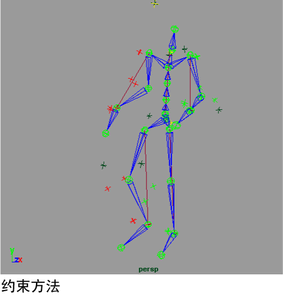

创建全身运动捕捉
创建全身运动捕捉序列
选择一个运动捕捉设备。该设备可以是真实的或虚拟的。有关定义运动捕捉设备的信息，请参见
设置设备
。
选择用于计算运动的方法。
该方法依赖于设备并可能使用反向运动学、正向运动学、约束或三者的组合。

基于演员比例构建一个骨架。如果可能，使用运动捕捉设备数字化演员关节位置。
将性能骨架附加到设备。
将性能骨架连接到角色骨架。
排演要记录的动作。
记录该运动。
查看记录的运动并将其插入到场景中。
若要将运动数据插入到场景中，请选择
文件 > 导入(File > Import)
，然后从显示的文件浏览器中选择运动数据文件 (.mov)。
父主题：
创建运动捕捉动画